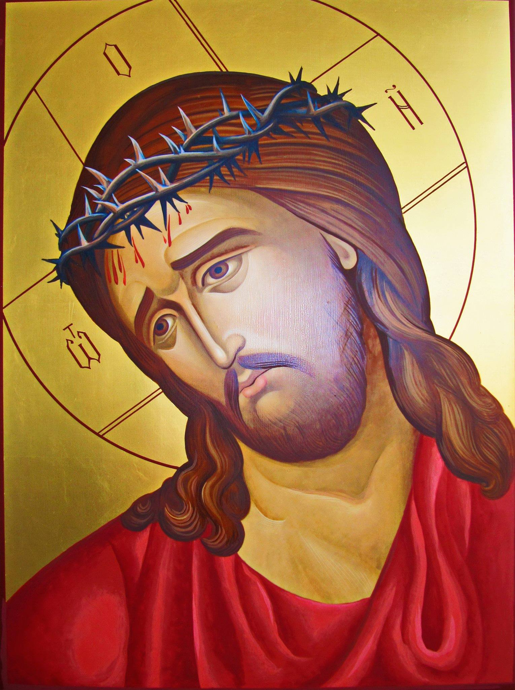
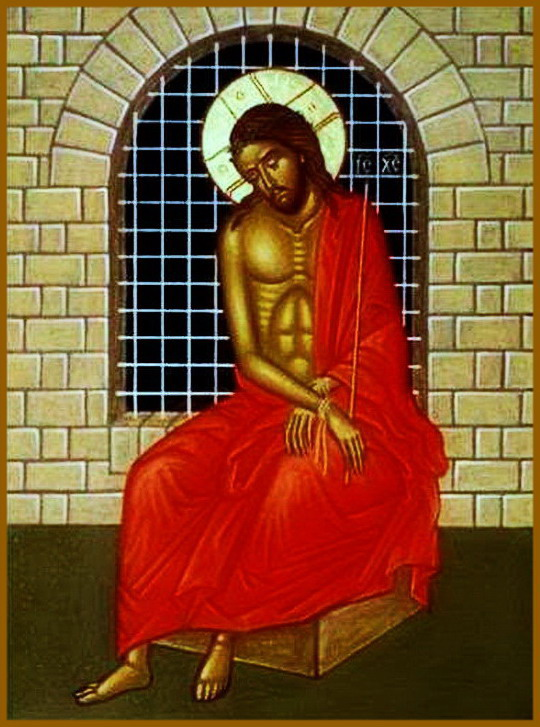
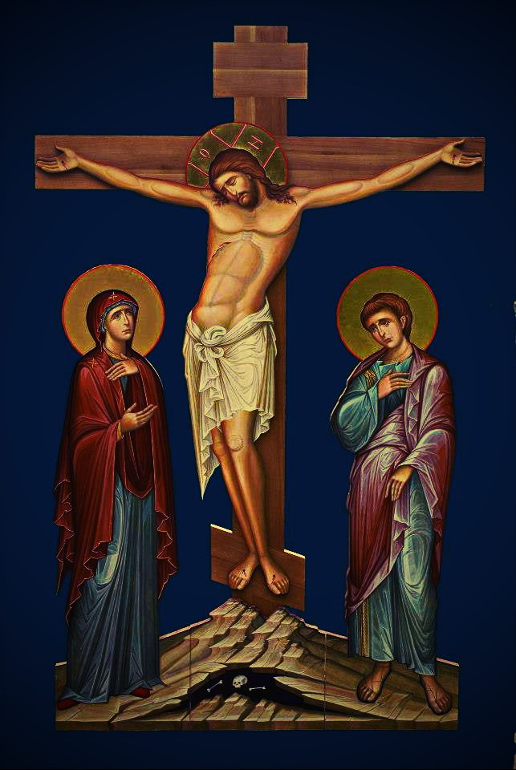
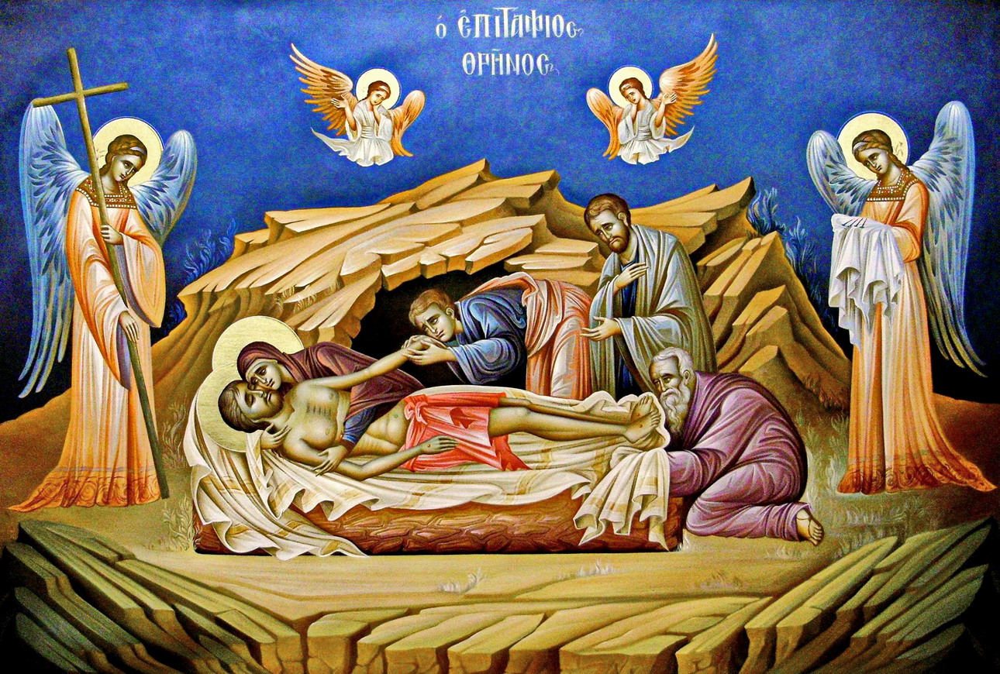
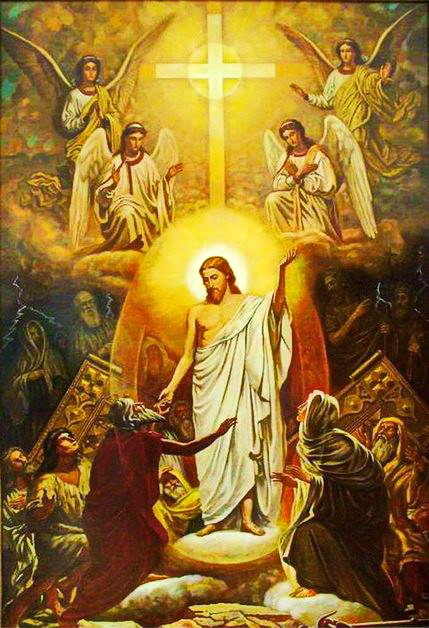
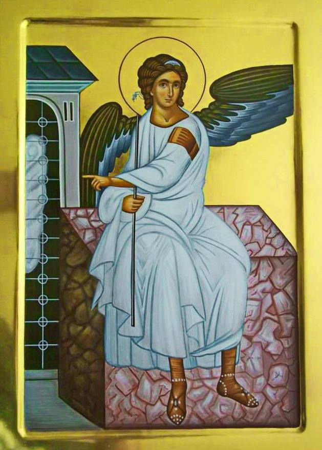
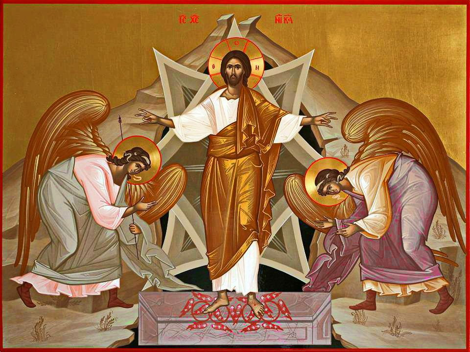
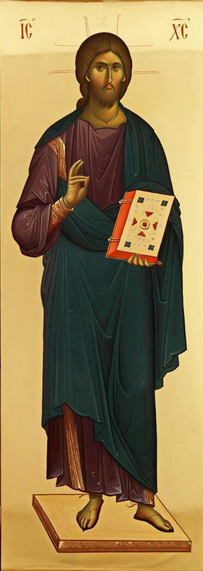
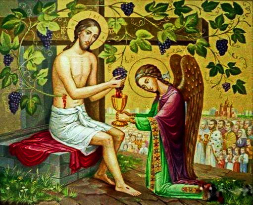

20 04 2014 (1119 дней 5 часов назад)
ПАСХА. Светлое Христово Воскресение
Самое великое - предназначение. Пророк Захария предсказал Божьему народу, ожидавшему прихода Спасителя, как именно явится Владыка мира и покоя: "…се Царь твой грядет к тебе, праведный и спасающий, кроткий, сидящий на ослице и на молодом осле, сыне подъяремной" (Захария 9:9). Именно так исполняя это пророчество, въехал в Иерусалим Сам Бог, пришедший на землю, - Иисус Христос. Не на коне, подобно земному царю, а кротко и смиренно - несмотря на то, что толпа восклицала, воздавая Ему царскую хвалу, и постилала пред Ним свои одежды. Кто, как не Он Всемогущий и Всеведущий, знал, насколько преходяща эта "любовь" толпы, этот её слепой восторг… Через несколько дней многие из этих людей будут требовать его мучительной смерти на кресте. Не на царский трон - на крест шёл Он в эти минуты.

Великая Пятница. Воспоминание Святых спасительных
Страстей Господа нашего Иисуса Христа
Страстей Господа нашего Иисуса Христа

Сразу после Вербного воскресенья весь христианский мир погрузился в некое подобие скорби по страданиям Господа Иисуса Христа. Начало страстной недели- самая строгая неделя Великого поста, самая тихая и требующая от верующего непрестанного размышления и работы над собой.
Распятие Господа нашего Иисуса Христа

Снятие с Креста и положение во гроб Господа Иисуса Христа.

Великая Суббота Сошествие в ад Господа нашего Иисуса Христа

Изведение из ада ветхозаветных праведников могло совершиться лишь в результате той победы над грехом и отцом греха и зла дьяволом, которая была одержана Иисусом Христом на Кресте, когда Он Своей смертью упразднил имеющего державу смерти, то есть дьявола, и избавил тех, которые были рабами греха и смерти (Евр. 2:14-15). "Обоженная душа Христа — говорит святой Иоанн Дамаскин, — нисходит во ад с тою целью, чтобы как живущим на земле воссияло солнце Правды, так и для находящихся "под землёю во тьме и сени смертной воссиял свет;" чтобы, как находящимся на земле, Господь благовествовал мир … таким же образом благовествовал и находящимся во аде: "да всякое колено поклонится Ему небесных, земных и преисподних".

“По прошествии же субботы, на рассвете первого дня недели, пришли Мария Магдалина и другая Мария посмотреть гроб. И вот, сделалось великое землетрясение, ибо ангел Господень, сошедший с небес, приступив, отвалил камень от двери гроба и сидел на нём; вид его был, как молния, и одежда его бела, как снег. Устрашившись его, стерегущие пришли в трепет и стали, как мёртвые. Ангел же, обратив речь к женщинам, сказал: «Не бойтесь, ибо знаю, что вы ищете Иисуса распятого; Его нет здесь — Он воскрес, как сказал. Подойдите, посмотрите место, где лежал Господь, и пойдите скорее, скажите ученикам Его, что Он воскрес из мёртвых и предваряет вас в Галилее; там Его увидите. Вот, я сказал вам». И, выйдя поспешно из гроба, они со страхом и радостью великой побежали возвестить ученикам Его. Когда же шли они возвестить ученикам Его, и вот, Иисус встретил их и сказал: «Радуйтесь!» И они, приступив, ухватились за ноги Его и поклонились Ему. Тогда говорит им Иисус: «Не бойтесь; пойдите, возвестите братьям Моим, чтобы шли в Галилею, и там они увидят Меня»” (Мф.28:1-10)
Христос Воскрес !!!

Воскресение Иисуса Христа — единственное поистине великое событие в истории мира. Оно является настольно основополагающим для христианства, что тот, кто отрицает его, не может быть истинным христианином. Без воскресения нет христианской веры, нет спасения и нет надежды. «Если нет воскресения мёртвых, — поясняет Павел, — то и Христос не воскрес; а если Христос не воскрес, то и проповедь наша тщетна, тщетна и вера ваша» (1 Кор. 15:13-14). Человек, верящий во Христа, Который не воскрес из мёртвых, верит в бессильного Христа, в мёртвого Христа. Если Христос не воскрес из мёртвых, тогда дело искупления не было совершено на кресте, а потому и «вера ваша тщетна, — продолжает Павел, — вы ещё в грехах ваших» (ст. 17).

Станем трепетать не перед смертью, а перед грехом; не смерть родила грех, но грех произвел смерть, смерть же стала исцелением греха. День Воскресения Господа нашего Иисуса Христа - основание мира, начало примирения, прекращение вражды, разрушение смерти, поражение диавола. (Святитель Иоанн Златоуст)
«Иисус Христос вчера, и сегодня, и вовеки — тот же».
Поздравляю вас с Праздником праздников – Воскресением Христовым! И опять мы зрим Живого, Воскресшего Господа, и опять Он рядом, и веселая благодать Пасхи радостью исполняет сердца наши. Девяносто пять лет я встречаю уже этот Великий день. И вот теперь, когда вожделенный край лазури Вечности близок, я хочу порадовать сердца ваши и своим личным свидетельством. Воскресения День Спасительный за мою долгую жизнь приходил всегда, принося с собой Силу и Любовь возлюбившего меня Христа, претворяя мою веру в знание неоспоримое. Он освящал меня чистой, ликующей радостью в детстве. Он укреплял меня, изнемогающего в трудах и болезнях. Он приходил и во мрак неволи, свидетельствуя о свободе во Христе и обещая свободу узнику. Дорогие мои, чадца Божии! Живите же и вы радостью Святой Пасхи, питайтесь Её обетованиями. Приносите возлюбившему нас Спасителю и свою любовь к Нему, и живую веру в то, что Истина и Милость путей Господних ведет нас в радость Вечной Пасхи. Воистину, воистину Воскресе Христос! (Благожелатель вашего спасения Архимандрит Иоанн (Крестьянкин).
Быть может, каждого из нас страдания в мире так же ждут,
Но Тот, Кто нас однажды спас благословит земной наш путь.
Пусть будет горе, пусть мучения и испытания впереди,
Но мы идем в страну спасения в надежде, вере и любви.
Но Тот, Кто нас однажды спас благословит земной наш путь.
Пусть будет горе, пусть мучения и испытания впереди,
Но мы идем в страну спасения в надежде, вере и любви.
